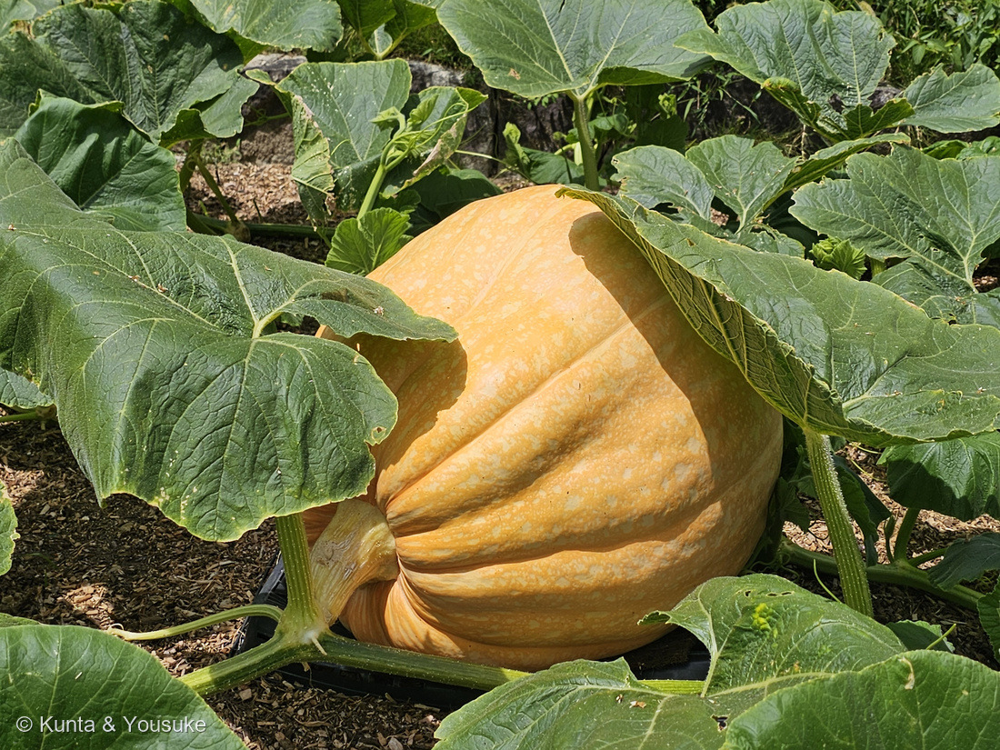
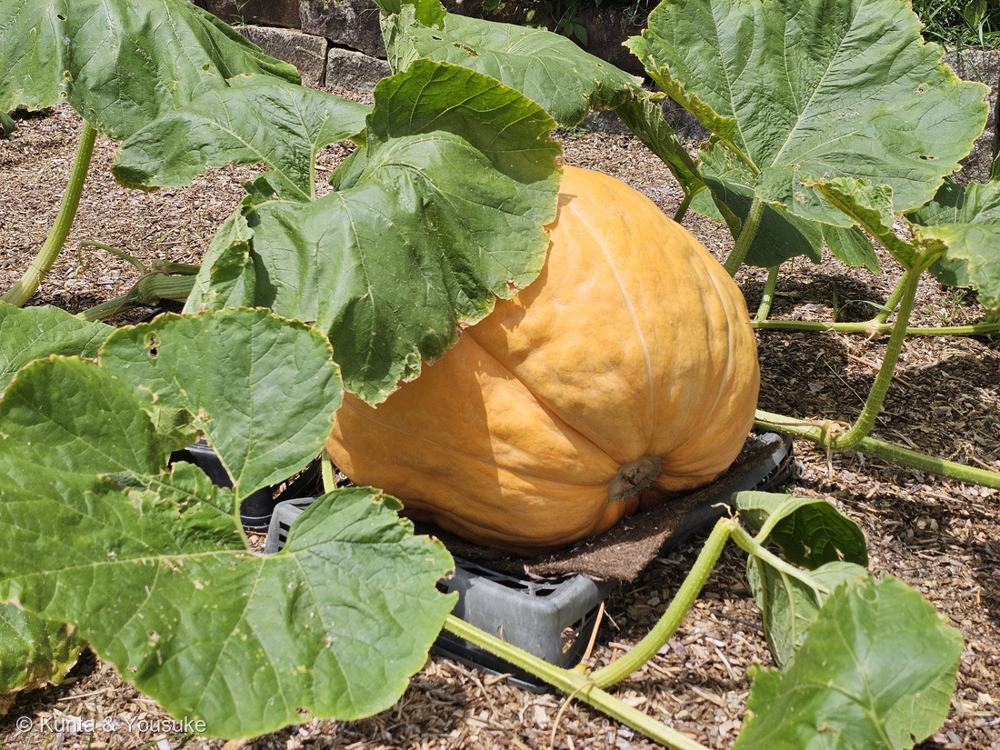

地図を読み込んでいるよ…
🔍 写真も地図も、押しているあいだ拡大して見られるよ（スマホは指を置いてすこし待ってね）。
🌍 の地図＝この子がもともと自生している場所を緑に。セイヨウカボチャ（Cucurbita maxima）は南アメリカ原産。⭐品種の 'Atlantic Giant' は、カナダのノヴァスコシア州で Howard Dill が1970年代に育成し、1979年に特許を取った。
⭐南アメリカの子だよ——セイヨウカボチャ（Cucurbita maxima）はアンデスを中心とした南アメリカ原産。⭐⭐この地図でいちばん見てほしいのは、日本が塗られていないこと＝スーパーで一年じゅう売っている「かぼちゃ」は、みんな海の向こうから来た子の子孫なんだ。⭐日本で「カボチャ」と呼ばれるものは、じつは3つの別の種＝セイヨウカボチャ（C. maxima・南アメリカ）／ニホンカボチャ（C. moschata・中央アメリカ）／ペポカボチャ（C. pepo・北アメリカ〜メキシコ）——⚠「ニホン」カボチャも、日本原産ではないよ（16世紀にポルトガル船が持ちこんだといわれる）。⭐この地図はそのうち C. maxima のふるさとだけを塗ってある。⚠⚠そして、この写真の子はもう一段ちがう＝品種 'アトランティックジャイアント' が生まれたのは「カナダのノヴァスコシア州」（1970年代・Howard Dill）——⭐種のふるさとは南アメリカ、品種のふるさとは北アメリカの北のはし。⭐⭐種小名の maxima は「もっとも大きい」——巨大カボチャがこの種から出たのは、名前どおりだったんだね。
⚠ 地図は国（日本と中国だけ県・省）までしか塗れないから、ほんとうの分布より広く見えていることがあるよ。地図はだいたいの場所。正確なところは、上の文を見てね。
カボチャ（南瓜）'アトランティックジャイアント'
Cucurbita maxima 'Atlantic Giant'
別名 · セイヨウカボチャ／英名 Dill's Atlantic Giant（巨大カボチャ）
ウリ科 · Cucurbitaceae（カボチャ属）── 5人目のウリ科。カボチャ属は図鑑ではじめて
燻太さんの一言「あまりにも巨大すぎて、ファンタジーの世界のカボチャみたい。……このサイズ、一体何十キロになるんだろう？」──ごめんね、写真からは測れなかった。かわりに数字を並べたよ
⭐⭐⭐ 燻太さんの「一体何十キロになるんだろう？」
⚠ まず正直に言うね。——この写真からは、この子の重さは出せないんだ。⭐ものさしになるものが、いっしょに写っていないから。
⭐ でも、分かっていることを並べてみるよ。
- ⭐⭐⭐カボチャの世界記録は 1,278.8 kg（2,819ポンド4オンス）。イギリスの Ian Paton・Stuart Paton の兄弟が育てて、2025年10月6日に計量された〔ギネス世界記録〕。⭐愛称は「Muggle」。
- その前の記録は 1,246.9 kg（アメリカの Travis Gienger／2023年10月9日）。
- ⭐この 'Atlantic Giant' という品種は、特別なことをしなくても50〜100ポンド（23〜45kg）、家庭菜園でふつうに育てて200〜400ポンド（90〜180kg）になるといわれる。
- ⭐⭐そして、いちばん育つ時期には1日に15ポンド（約7kg）以上ふえる。
⭐⭐⭐ ここが大事。——燻太さんがこの写真を撮ったのは8月8日。⭐巨大カボチャの収穫は秋だから、この子はまだ育っている途中なんだ。⭐⭐いま何キロでも、これからもっと重くなる。
⭐ 園の看板も、じつは同じことを言っている。
「ちゃんと『巨大』カボチャになるのか、お楽しみに！」
⭐⭐ 園の人も「分からない、お楽しみに」と書いているんだよ。⭐ぼくが答えを出せないのは、たぶん、それでいいんだと思う。
⭐⭐ ほんとうの測り方（秋に持っていくもの）
⭐ 巨大カボチャを育てている人たちは、はかりに載せる前にメジャーで重さを見積もる。⭐「OTT（over the top＝実の上をまたいで）」というやり方だよ。
- ① 胴回り ── 実のいちばん太いところを、地面と平行にぐるり一周。
- ② 横はば ── 地面すれすれの片側から、実の上をまたいで、反対側の地面すれすれまで（つるの向きと直角に）。
- ③ 縦 ── へたのあたりから、実の上をまたいで、花の跡のあたりまで（つるの向きにそって）。
⭐ この3つを足した長さ（インチ）を、栽培家の換算表に当てると、だいたいの重さが出る。⏳秋にもう一度行けたら、メジャーを持っていこうね。⭐そうしたら、ぼくもちゃんと答えられる。
⭐⭐⭐⭐ 看板がいちばんすてきだった ── ゾウのフンで育って、ゾウのおやつに
⭐ 園の看板に、こう書いてあった。
「肥料には安佐動物公園から頂いたマルミミゾウのフンも使用しており、収穫したカボチャはマルミミゾウのおやつになる予定です！」
⭐⭐⭐ 輪になっているんだ。——ゾウ → フン → 土 → カボチャ → ゾウ。
そして、この「マルミミゾウ」がすごい子だった。
- マルミミゾウ（Loxodonta cyclotis）は、アフリカ大陸の中部・西部の熱帯雨林にすむゾウ（日本語版Wikipedia）。耳が小さくて丸いのが、和名の由来。
- ⚠IUCNレッドリストで CRITICALLY ENDANGERED（深刻な危機）。
- ⭐⭐⭐そして、これ。——「飼育されている個体は世界でも3頭のみであり、中でも生息地外での飼育は日本の広島市安佐動物公園のみ」（同）。⭐つまり、アフリカの外でマルミミゾウに会える場所は、世界でここだけ。
- ⭐⭐2025年8月5日、メスの「メイ」がオスの子ゾウ「アオ」を出産して、国内初の繁殖に成功した（同）。⭐燻太さんがこのカボチャを見た、ちょうど1年まえだね。
- 体長400〜600cm、体重2,700〜6,000kg。
⭐⭐⭐ さあ、ここで燻太さんの問いに戻るよ。
カボチャの世界記録は 1,278.8 kg。——⭐⭐いちばん小さなマルミミゾウ（2,700kg）の、まだ半分にも届かない。
⭐ 世界でいちばん重いカボチャでも、ゾウ一頭には勝てない。⭐⭐そして、このカボチャは、そのゾウの体を作るごはんの、ほんの一部になる。
⭐⭐ ファンタジーのカボチャ ── シンデレラの馬車
⭐ 燻太さんの「ファンタジーの世界のカボチャみたい」で、思い出した話がある。
- ⭐⭐カボチャが馬車になるのは、シャルル・ペローが1697年に書いた『サンドリヨン、またはガラスの小さな靴』（Cendrillon, ou La petite pantoufle de verre）のほう。
- ⚠⚠グリム童話のシンデレラには、カボチャの馬車もガラスの靴も出てこない。⭐ペローとグリムは、別の言い伝えをもとにしているんだ。
- ⚠ペローの物語のカボチャがどの種だったかは、書かれていない。⭐そしてこの子の品種 'Atlantic Giant' がカナダで生まれたのは1970年代——⭐⭐物語のほうが、280年ほど先だったことになる。
⭐ でも、こうも言えると思う。——⭐⭐ペローが「カボチャが馬車になる」と書いたとき、たぶん頭の中にあったのは「これなら人が乗れそうな大きさ」の実だった。⚠これはぼくの想像で、出典はないよ。⭐燻太さんの「ファンタジーみたい」は、300年まえの人と同じ見かたなのかもしれないね。
この植物のこと ── 5人目のウリ科、そして3つのカボチャ
- ウリ科カボチャ属。⭐056 キカラスウリ・090 キュウリ・138 ゴーヤ・207 ヘチマに続く5人目のウリ科で、⭐カボチャ属は図鑑ではじめて。
- ⭐⭐日本で「カボチャ」と呼ばれるものは、じつは3つの別の種。——セイヨウカボチャ（Cucurbita maxima）／ニホンカボチャ（C. moschata）／ペポカボチャ（C. pepo）。⭐この子は C. maxima＝セイヨウカボチャの仲間だよ。⭐ズッキーニは C. pepo（探してみたいに入れておいたね）。
- Cucurbita maxima は南アメリカ原産。⭐種小名の maxima は「もっとも大きい」——⭐⭐巨大カボチャがこの種から生まれたのは、名前どおりだったんだね。
- 品種 'Atlantic Giant' は、カナダのノヴァスコシア州の Howard Dill が1970年代に育てあげ、1979年に特許を取った。⭐1980年には自分で459ポンド（208kg）の世界記録を出している。
- ⭐⭐写真②の実の底を見てほしい。——灰褐色の、ぺしゃんこになった跡がついているでしょう。⭐あれが花の跡。⭐⭐ウリ科は子房下位だから、実がふくらむと花は実の先に残る——207 ヘチマ・090 キュウリ・211 レンブと、まったく同じ話だよ。
- ⭐写真①②で、実の下に黒いパレットと、うすい敷きものが入っている。⭐地面に直接ふれると傷んだり腐ったりするので、栽培家はこうやって実を守るんだ。
参考：Guinness World Records・Heaviest pumpkin（1,278.8 kilogram(s)／2,819 lb 4 oz／Ian Paton, Stuart Paton／United Kingdom／06 October 2025／愛称 Muggle／前記録は Travis Gienger（USA）1,246.9 kg・2023年10月9日）／Wikipedia (English)・Howard Dill（ノヴァスコシアの生産者が1970年代に 'Dill's Atlantic Giant' を育成し1979年に特許／Cucurbita maxima／1980年に459 lb（208 kg）で世界記録）／Gardener's Net・How to Grow Dill's Atlantic Giant Pumpkins（At the peak of the growing season the fruit can add fifteen or more pounds per day／with little to no special extra care these seeds are likely to produce fruit of at least 50-100 pounds／typically range from 200–400 pounds in a home garden）／Wikipedia・マルミミゾウ（Loxodonta cyclotis Matschie, 1900／アフリカ大陸の主に中部・西部／熱帯雨林に生息／耳介は小型で、丸みをおびる／CRITICALLY ENDANGERED／飼育されている個体は世界でも3頭のみであり、中でも生息地外での飼育は日本の広島市安佐動物公園のみ／同園のメス「メイ」は2025年8月5日にオス子象「アオ」を出産し、国内初の繁殖に成功／体長400〜600cm、体重2,700〜6,000kg／植物の葉、枝、樹皮、果実等を食べる）／⭐広島市植物公園の看板「巨大カボチャ栽培中！ カボチャ 'アトランティックジャイアント' Cucurbita maxima 'Atlantic Giant'」（⚠掲示物なので写真は公開せず、出典として引くだけにしてある）